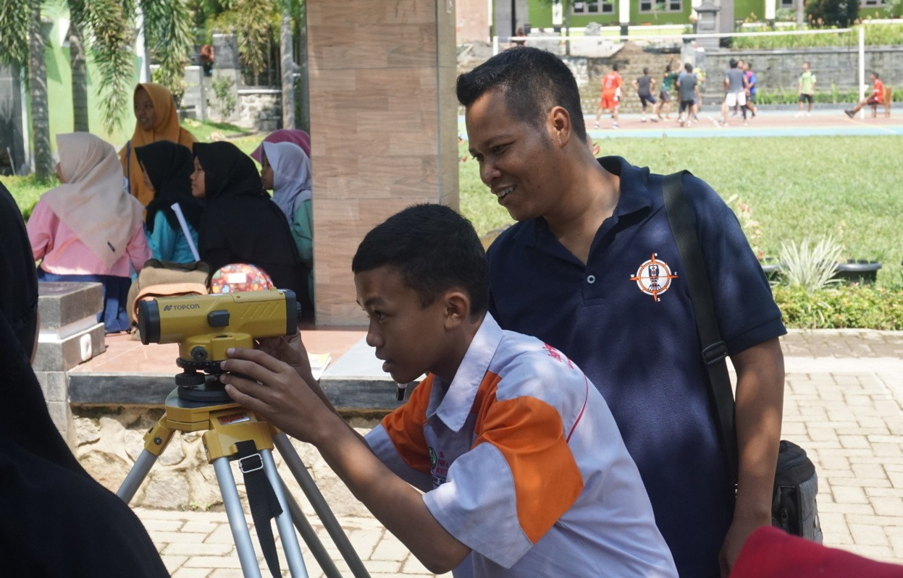
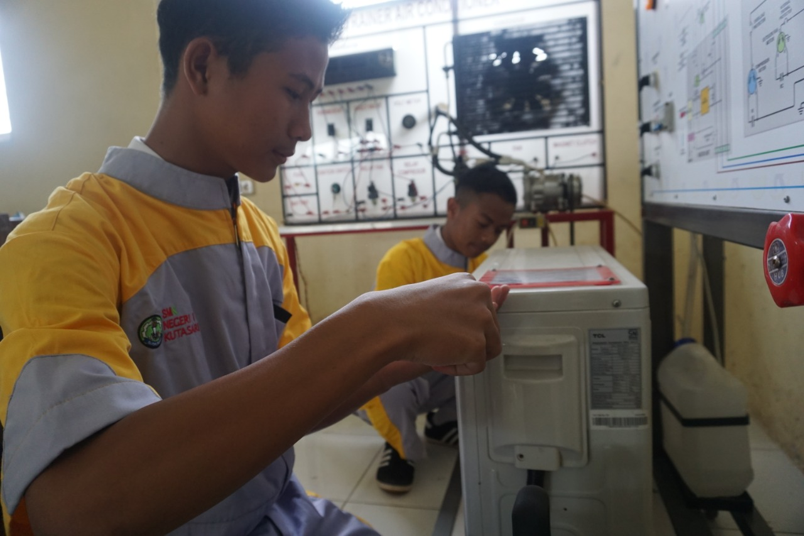
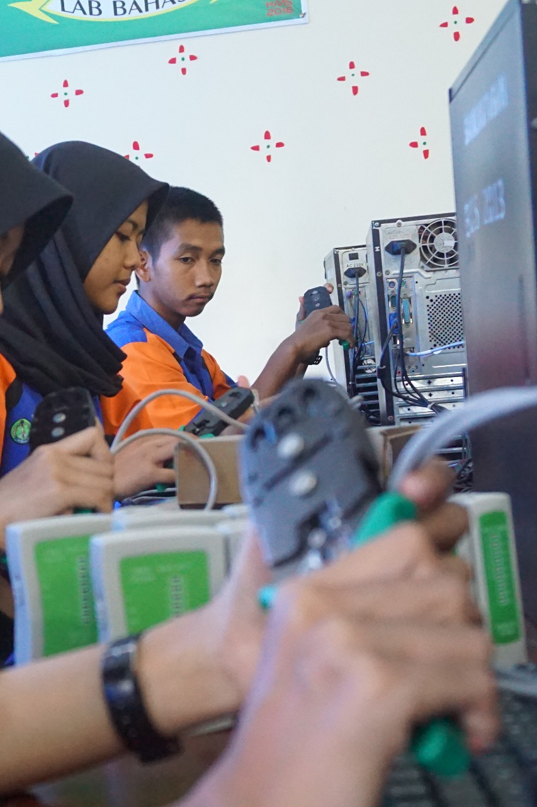

01
Desain Pemodelan dan Informasi Bangunan

Mempelajari proses desain, pemodelan dan informasi bangunan menggunakan teknologi dan perangkat lunak yang relevan.
SelengkapnyaPilih bidang keahlian sesuai minat dan bakatmu.
Program pendidikan kejuruan yang tersedia di SMK Negeri 1 Kutasari.

Mempelajari proses desain, pemodelan dan informasi bangunan menggunakan teknologi dan perangkat lunak yang relevan.
Selengkapnya
Teknik Pemanasan, Tata Udara, dan Pendinginan (TPTU) merupakan salah satu program keahlian yang tersedia di SMK Negeri 1 Kutasari.
Selengkapnya
Teknik Sepeda Motor (TSM) membekali peserta didik dengan pengetahuan dan keterampilan dalam perawatan dan perbaikan sepeda motor.
Selengkapnya
Teknik Komputer dan Jaringan (TKJ) membekali peserta didik dengan keterampilan komputer, jaringan, server, dan teknologi informasi.
Selengkapnya
Program keahlian Akuntansi membekali peserta didik dengan pengetahuan dan keterampilan dalam pencatatan transaksi, pengelolaan keuangan, dan penyusunan laporan keuangan.
Selengkapnya